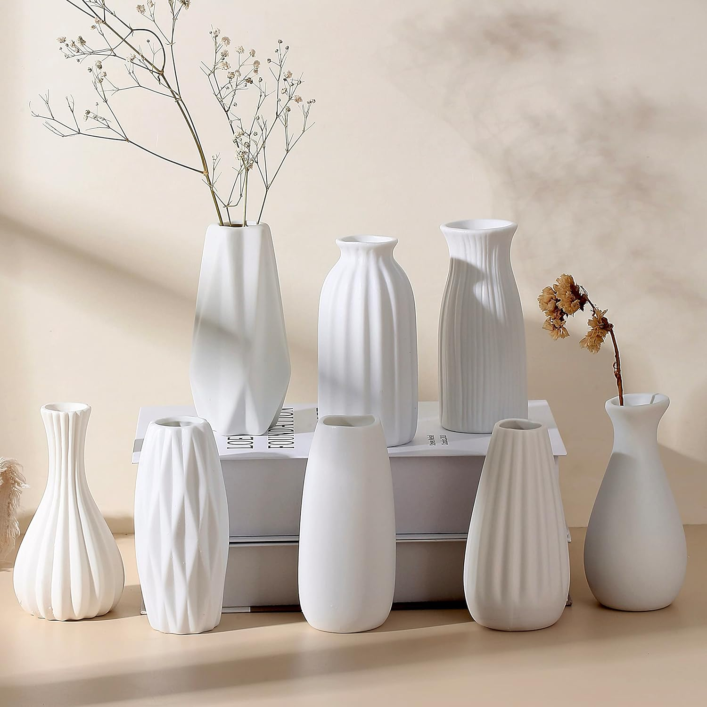

The Kanso Vessel epitomizes the core tenets of Japandi design with an almost poetic simplicity. Its form, devoid of extraneous ornamentation, speaks volumes through its subtle curves and an organic silhouette that feels both modern and timeless. The matte finish of the ceramic surface, often exhibiting slight variations in texture and tone, masterfully embraces the wabi-sabi philosophy—the appreciation of imperfection and transience. It doesn't demand attention but rather invites contemplation, serving as a tranquil focal point that enhances, rather than dominates, its surroundings. This vase is not merely an object; it is a testament to the beauty found in restraint and the deliberate absence of excess, encouraging a meditative stillness in any living space.
Beyond its compelling aesthetic, the Kanso Vessel exhibits a thoughtful consideration for utility and material integrity. Crafted from high-quality ceramic, it possesses a reassuring weight and sturdy base, ensuring stability when paired with dried botanicals like pampas grass. The interior is generally left unglazed or with a subtle sealing, which makes it ideally suited for such natural elements, though users should note it is typically not designed for holding water, preserving its intended minimalist character. The craftsmanship is evident in its smooth, consistent finish and the absence of noticeable flaws, suggesting a dedication to detail. Positioned on a reclaimed wood console, a polished concrete surface, or a simple side table, this vase consistently delivers on its promise to infuse a space with a touch of understated elegance and a grounding connection to natural textures.
This beautiful minimalist ceramic vase effortlessly introduces a serene, wabi-sabi aesthetic to any room. It is perfectly designed to elevate the natural beauty of dried botanicals like pampas grass within a curated living space.
View Current Price| Material | High-Quality Ceramic |
| Key Feature | Wabi-Sabi Aesthetic, Minimalist Form |
| Aesthetic Style | Japandi Minimalist Warm |